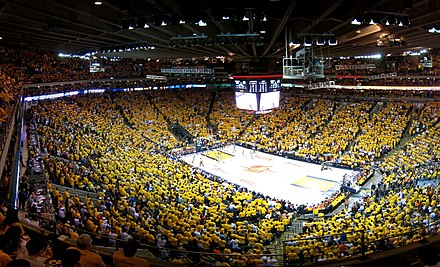
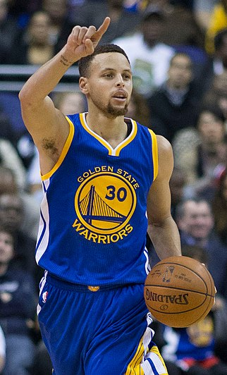

Histoire du Golden States :
Les Warriors de Golden State (en anglais : Golden State Warriors, GSW, « Guerriers de l’État doré ») sont une franchise californienne de basket-ball de la NBA basée à San Francisco, dans la région de la baie de San Francisco. Elle évolue dans la Conférence Ouest, dans la Division Pacifique, et dispute ses matchs à domicile au Chase Center. Fondée en 1946 sous le nom de Warriors de Philadelphie, la franchise remporte la première édition du championnat de la BAA, ancêtre de la NBA, en 1947. Elle déménage à San Francisco en 1962, où elle prend le nom de Warriors de San Francisco jusqu'en 1971, et voit évoluer des vedettes du basket-ball des années 1960 et 1970 : Rick Barry, Paul Arizin, Nate Thurmond et surtout Wilt Chamberlain, considéré comme l'un des plus grands basketteurs de l'histoire. Elle connaît des difficultés par la suite, avant de parvenir à remporter un quatrième titre lors de la saison 2014-2015. Lors de la saison 2015-2016, ils établissent le record du plus grand nombre de victoires en saison régulière, soit 73 matchs gagnés, battant le record de 72 matchs gagnés des Bulls de Chicago durant leur saison 1995-1996. La franchise remporte son cinquième titre lors de la saison 2016-2017, face aux Cavaliers de Cleveland en finale, puis réitère cette performance face au même adversaire l'année suivante, menée par Stephen Curry, Klay Thompson, Draymond Green et Kevin Durant. Elle est réputée pour son style très offensif (run and gun) : elle figure depuis plusieurs années parmi les meilleures attaques de la ligue. Elle utilise fréquemment un système dit de small ball, avec de plus petits joueurs, pour valoriser l'agilité, la rapidité et le tir à trois points, au détriment de la force physique et du jeu dans la raquette.
Joueurs marquants de la franchise : Wilt Chamberlain • Al Attles • Tom Meschery • Nate Thurmond • Rick Barry • Chris Mullin • Mitch Richmond • Tim Hardaway • Latrell Sprewell • Antawn Jamison • Jason Richardson • Baron Davis • Stephen Jackson • Monta Ellis • Kevin Durant • Andre Iguodala • Chris Webber • Draymond Green • Stephen Curry • Klay Thompson


